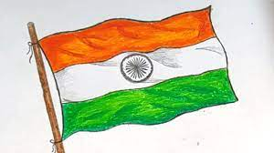
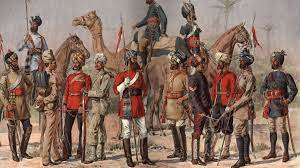
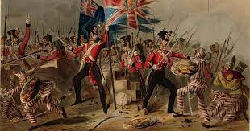
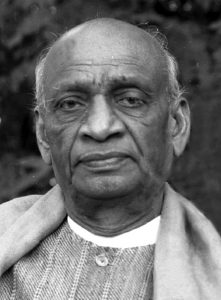
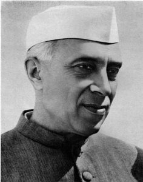
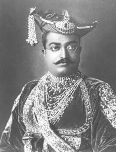
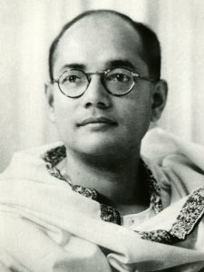

Independence Day
When we come to India’s history of independence from the British, the Dawn of the 15 August 1947, was the beginning of an era of ending British colonialism of more than 200 years. Pandit Jawaharlal Nehru had persuing in his first speech that India’s gaining of independence was a ‘tryst with destiny in his freedom speech. He also said that struggle for freedom from long years of slavery is a tiresome one as witnessing the sacrifices of many freedom fighters who laid down their lives on the line.
British rule began in India in the 17th century. At the beginning of the East India Company, it subdued local kingdoms. It made itself after the Battle of Plassey as a dominant force and control over the country by the 18th century. After that, East India Company was replaced by the British crown. In the wake of the Indian Mutiny, it had direct control over Indian. The period of world war 1st was considered as a reform of British rule. It began Mohandas Karamchand Gandhi led the Independence movement. Gandhi jee led the nationwide non-violent, non-cooperation movement, and civil disobedience movement.
 In 1929, before the independence day 15 August 1947, at the Lahore session of India, national Congress declared the “Purna Swaraj.” Later on 26 January 1930, the INC again declared as Independence Day at that time. The Congress called on people to pledge themselves to civil disobedience and “to carry out the Congress instructions issued from time to time” until India attained complete independence. The grand celebration of Independence Day created the stroke of nationalistic fervor among Indian citizens. And it forces or relinquishes the British government to granting freedom.
We the people can’t miss taking some prominent freedom fighters without whom the dream of our independence was not possible including Mahatma Gandhi, Netaji Subhash Chandra Bose, Lala Lajpat Rai, Bal Gangadhar Tilak, Sardar Vallabhbhai Patel, Dr. Rajendra Prasad, Moulana Abdul Kalam Azad, Sukhdev, Gopal Krishna Gokhale, Lokmanya Bal Gangadhar Tilak, Chandra Shekhar Azad, etc. His sacrifice and hard work make our country independent from British rule. This is the day that every individual of the country pays tribute to our freedom fighters.
Some of the Freedom Fighters

Sardar Vallabhbhai Patel

Jawahar Lal Nehru

Nana Sahib

Lal Bahadur Shastri

Subhash Chandra Bose
Armita Sharma
7C
7C